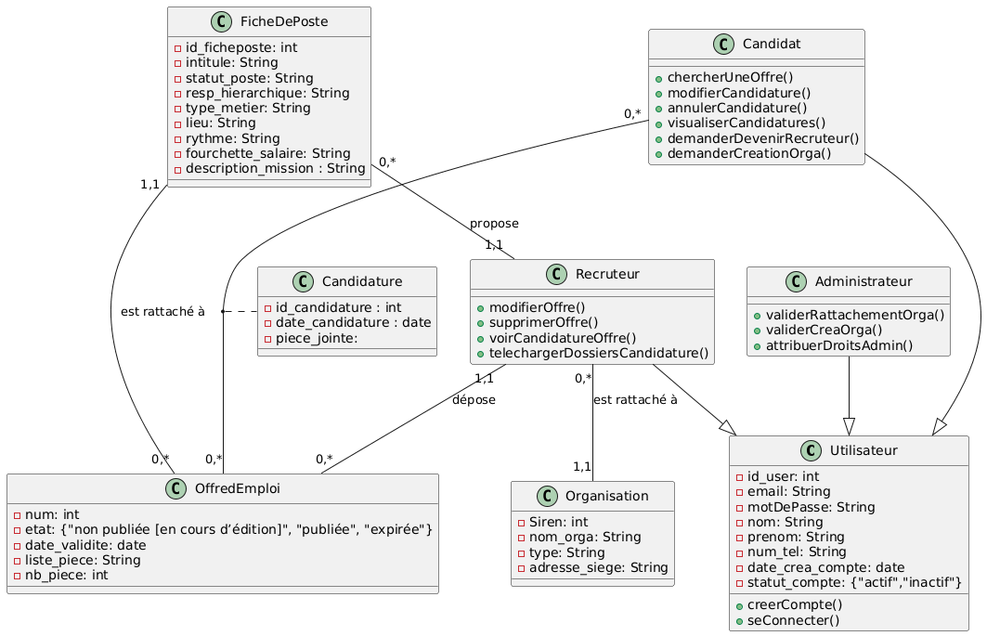
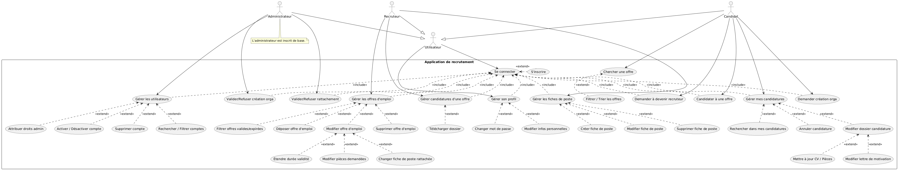
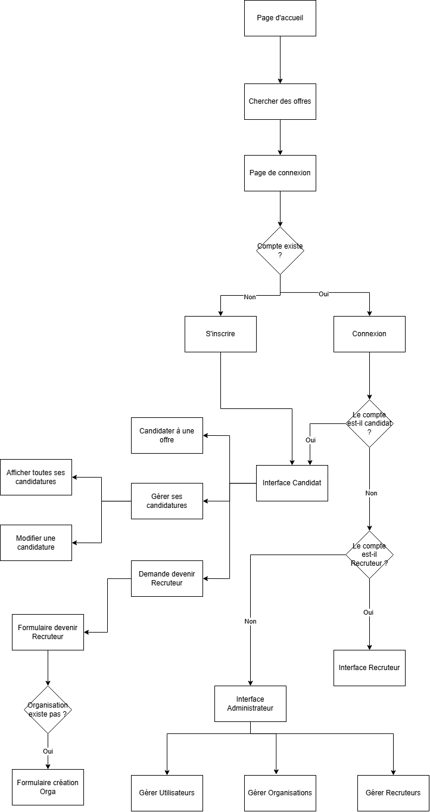

Plateforme de Recrutement
Article technique — API Express.js, authentification & bases de données
Ce projet académique (module SR10) consiste en une application de recrutement : une API backend modulaire construite avec Node.js / Express.js, sécurisée par un middleware d'authentification, et adossée à deux systèmes de bases de données : PostgreSQL (relationnel) et MongoDB (NoSQL). Contrairement aux autres projets du portfolio, celui-ci est présenté sous forme d'étude technique, sans exécution en ligne.
1. Architecture de l'API
L'API suit une architecture en couches : routes (définition des endpoints), middlewares (validation, authentification), services (logique métier) et accès aux données. Cette séparation rend chaque brique testable indépendamment et facilite l'ajout de nouveaux endpoints.
1.1 Routage modulaire (Express)
Le routeur est découpé par domaine : auth, candidatures,
offres, administrateurs. Chaque module exporte un
Router Express monté sur l'application principale.
1.2 Middleware d'authentification
Un middleware centralisé vérifie le JWT (JSON Web Token) présent dans
l'en-tête Authorization, puis charge l'utilisateur correspondant dans la requête.
Il protège ainsi toutes les routes qui nécessitent une session authentifiée, sans dupliquer
la logique dans chaque route.
Un second middleware, exigerRole, s'appuie sur req.utilisateur.role
pour restreindre certaines routes (ex. création d'une offre réservée aux recruteurs).
Les mots de passe sont stockés hachés avec bcrypt (jamais en clair).
2. Architecture des bases de données
Le projet exploite deux paradigmes complémentaires : le relationnel (PostgreSQL) pour les données transactionnelles fortement liées, et NoSQL (MongoDB) pour les données semi-structurées et les parcours de candidature.
2.1 Modèle relationnel — PostgreSQL
Le schéma relationnel gère les entités utilisateurs, offres et
candidatures, reliées par des clés étrangères et contraintes d'intégrité.
Exemple de requête d'agrégation :
2.2 Modèle NoSQL — MongoDB
MongoDB stocke le parcours de candidature sous forme de documents imbriqués : chaque candidature embarque l'historique des statuts, les notes d'entretien et les documents associés — un modèle adapté à des données dont la structure évolue au fil du processus.
Exemple d'agrégation MongoDB (pipeline) :
3. Diagrammes
Les diagrammes de conception proviennent du premier livrable du projet (modélisation conceptuelle et logique, cas d'usage, arborescence du site).


Le MLD (Modèle Logique de Données) correspondant (télécharger le .txt) :

4. Sécurité & bonnes pratiques
| Aspect | Mesure mise en place |
|---|---|
| Mots de passe | Hachage bcrypt, jamais stockés en clair |
| Sessions | JWT signé (secret d'environnement JWT_SECRET) |
| CSRF | Analyse de la vulnérabilité et contre-mesures (rapport TD6) |
| Validation | Validation des entrées (types, longueurs, formats email) |
| Erreurs | Réponses HTTP standardisées (400, 401, 403, 404, 500) |